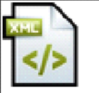

- Programación
- Bases de Datos
- Entornos
- Sistemas
- Inglés
| Lenguaje de Marcas | Asignatura de primer curso | ||
|---|---|---|---|
| HTML:Lenguaje básico para la creación de las páginas web | |||
| CSS:Lenguaje para aplicar estilos a letras, colores, bordes, etc. | |||
|  | XML:Lenguaje para marcado genérico | ||
|
Otras materias de primero:
|
¡VEN AL INSTITUTO! | |